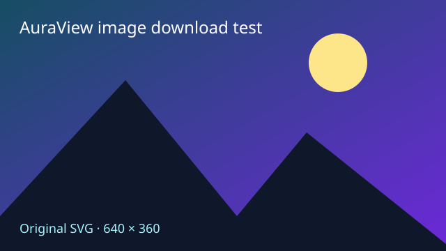

Open the Downloads toolbar panel. Each action below should add a separate entry there, with the correct filename and completion status.
For each completed file, try Show in folder, Download again, and Delete file. Download again should keep the original and create a numbered copy. Delete file should move only that file to the Recycle Bin; its history entry should still offer Download again. Keep this page open when downloading generated files again.
Hover the image and use its bottom-right download button.

Hover the video and use its top-right download button.
Repeat either download: existing files should receive numbered names.